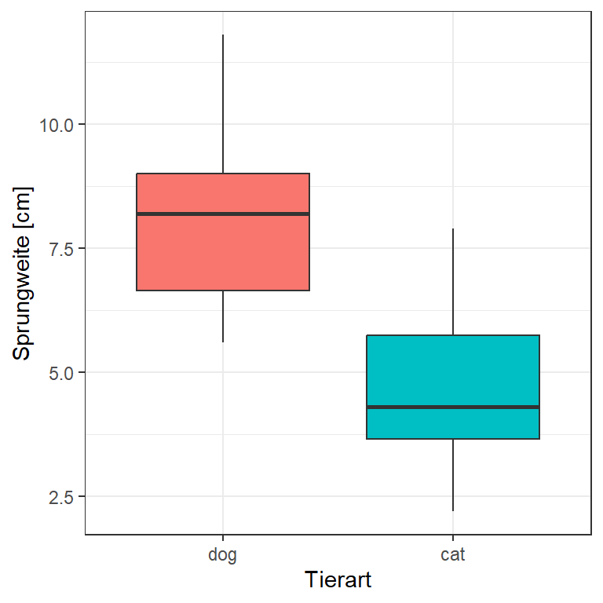

1 Organisation
Version vom Mai 16, 2023 um 10:36:13
Den Teil kannst du hier überspringen, wenn es dich nicht so richtig interessiert, was ich alles an Vorlesungen an der Hochschule Osnabrück anbiete. Wenn es dir um statistische Inhalte geht, dann gehe einfach weiter in die nächsten Kapitel. In diesem Kapitel geht es nochmal Orientierung über meine Vorlesungen zu geben, wenn dich noch mehr als nur der Pflichtkurs interessiert.
1.1 Statistische Beratung
Neben der klassischen Vorlesung biete ich auch Termine für die statistische Beratung von Abschlussarbeiten sowie Projekten an. Dieses Angebot gilt es für alle Mitglieder der Hochschule Osnabrück. Primär für Fakultät Agrarwissenschaften und Landschaftsarchitektur (AuL), aber ntürlich auch für alle anderen Fakultäten. Dafür musst du mir einfach nur eine E-Mail schreiben und dann erhälst du einen Termin innerhalb der nächsten zwei Wochen.
Die Beratung ist grundsätzlich anonym und vertraulich. Wenn du willst kannst du gerne noch dein:e Betreuer:in mitbringen. Das ist aber keine Voraussetzung oder Notwendigkeit. Meistens finden mehrere Besprechungen statt, wir versuchen aber natürlich zusammen zügig dein Problem zu lösen. Ziel ist der Beratung ist es dich in die Lage zu versetzen selbstständig deine Analyse zu rechnen.
1.2 Vorlesungen an der Hochschule Osnabrück
Von mir angebotene Vorlesungen werden an der Hochschule Osnabrück an der Fakultät Agrarwissenschaften und Landschaftsarchitektur (AuL) in ILIAS verwaltet. Alle notwendigen Informationen und Materialien sind auf ILIAS unter https://lms.hs-osnabrueck.de/ zu finden. Wenn du in dem Kurs nicht angemeldet bist, dann kontaktiere mich bitte per Mail. Auch die Kommunikation erfolgt von meiner Seite aus über ILIAS.
Auf ILIAS findest du alle aktuellen Kursinformationen und erhälst auch die Mails, wenn Änderungen im Kursablauf stattfinden.
Wenn du nicht in der Fakultät Agrarwissenschaften und Landschaftsarchitektur (AuL) studierst oder aber in einem Studiengang, der meine Module nicht anbietet, steht es dir natürlich frei, sich in meine Vorlesungen zu setzten. Du findest in Anhang D eine Übersicht der angebotenen Module und auch die inhaltliche Ordnung nach Lernstufe. Dort findest du auch die aktuellen Entwürfe der Modulbeschreibungen. Bitte informiere dich in deinem Studierendensekretariat über die Modalitäten zur Prüfungsteilnahme.
1.3 Bachelorarbeit
Hier findest sich eine aktuelle Struktursammlung für die Bachelorarbeit. Hier findest du keine Themen. Dafür musst du mich bitte ansprechen oder eine E-Mail schreiben. Die Themen finden sich dann etwa mit Kooperationspartern oder aber eher methodisch ohne echte Daten. Das müssen wir dann aber Absprechen.
Bitte halte Rücksprache, wenn dir Teile der Regeln für die Bachelorarbeit unklar sind.
- Ich empfehle die Arbeit in engischer Sprache zu verfassen.
- Die Bachelorarbeit umfasst einen Zeitraum von 12 Wochen. Bei Unsicherheit über das Thema kann einmalig eine 4-wöchige Einarbeitungsphase vereinbart werden. Danach wird das Thema der Bachelorarbeit konkretisiert.
- Der Umfang sollte die 30 Seiten nicht überschreiten.
- Die Arbeit umfasst ca. 30 Referenzen, davon sind die meisten aktuelleren Datums. Internetseiten zählen ausdrücklich nicht als Referenz.
- Ein Bewertungsbogen für die Bachelorarbeit steht zu Beginn der Arbeit zu Verfügung und kann jederzeit eingesehen werden.
- Im Rahmen der Betreuung finden mindestens jede Wochen ein kurzes Zoom-Treffen statt in dem der aktuelle Fortschritt der Arbeit besprochen wird.
- In der 4-ten Woche wird eine kurze Präsentation der bisherigen erarbeiteten Inhalte gegeben. Diese Präsentation kann in der 8-ten Woche erneut erfolgen.
- Mit einem methodischen Thema wird die Arbeit in Quarto in R oder in LaTeX in Overleaf geschreiben.
Im Folgenden siehst du nochmal den groben zeitlichen Ablauf in Abbildung 1.1. Der Ablauf dient der groben Orientierung, damit du auch weißt, wo du etwa stehst. Nach vier Wochen solltest du gut 3500 Wörter geschrieben haben und nach 8 Wochen ca. 7000 Worte. Damit solltest du dann am Ende auf die 30 Seiten mit ca. 10500 Worten kommen.

Bitte bachte auch die Hilfestellungen und die Erfahrungsberichte in dem Anhang B, wo ich nochmal über Writing principles etwas aufgeschrieben habe. Vielleicht hilft dir das dann auch.
Korrekte Schreibweise von einer Formel
\[ y \sim x_1 + x_2 \]
mit
- \(y\) gleich dem gemessenen Frischgewicht in [kg/ha],
- \(x_1\) als der kontinuierliche Einflussvariable 1,
- \(x_2\) als der Einflussvariable 2 als Faktor mit den Leveln \(a\), \(b\) und \(c\).
Korrekte Beschriftung und Referenzierung einer Abbildung
In Abbildung 1.2 sind die Sprungweiten in [cm] von Hunde- und Katzenflöhen als Boxplots dargestellt.
Korrekte Beschriftung und Referenzierung einer Tabelle
| animal | jump_length |
|---|---|
| dog | 5.7 |
| dog | 8.9 |
| dog | 11.8 |
| dog | 8.2 |
| dog | 5.6 |
| dog | 9.1 |
| dog | 7.6 |
| cat | 3.2 |
| cat | 2.2 |
| cat | 5.4 |
| cat | 4.1 |
| cat | 4.3 |
| cat | 7.9 |
| cat | 6.1 |
In Tabelle 1.1 sind die Sprunglängen in [cm] in der Spalte jump_length von Hunde- und Katzenflöhen in der Spalte animal dargestellt. Insgesamt wurden \(n = 14\) Flöhe gemessen davon sieben Hundeflöhe und sieben Katzenflöhe. Wir haben ein balanciertes Design vorliegen.